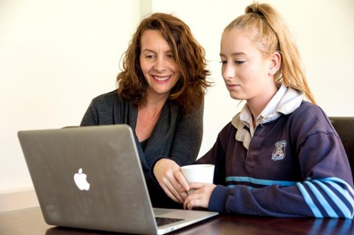

Information for parents and carers
Changes in young people
Young people can go through many different changes as they grow up. Raising sensitive issues and resolving problems that arise along the way can be challenging for them.
It can often be hard as a parent to know the difference between normal behaviour, such as occasional moodiness and irritability, and an emerging mental health problem.
If a young person develops a mental health problem it is important that they get support from both their family and friends and health professionals.
The information in this fact sheet is designed to help you better understand mental health and what you can do to support young people who might be going through a tough time.
Mental health and mental health problems in young people
Good mental health is about being able to work and study to your full potential, cope with day-to-day life stresses, be involved in your community and live life in a free and satisfying way.
A young person who has good mental health has good emotional and social wellbeing and the capacity to cope with change and challenges.
Feeling down, tense, angry, anxious or moody are all normal emotions for young people, but when these feelings persist for long periods of time, or if they begin to interfere with their daily life, they may be part of a mental health problem.
Mental health problems can also influence how young people think and their ability to function in their everyday activities, whether at school, at work or in relationships.
If you think you know a young person whose mental health is getting in the way of their daily life, it is important to let them know you are there to support them.
Warning signs
Most parents can tell when something is out of the ordinary, but there are also signs that suggest a young person might be experiencing a mental health problem. These are new, noticeable and persistent changes in the young person, lasting at least a few weeks, including:
- Not enjoying, or not wanting to be involved in things that they would normally enjoy
- Changes in appetite or sleeping patterns
- Being easily irritated or angry for no reason
- Their performance at school, TAFE, university or work is not as good as it should be or as it once was
- Involving themselves in risky behaviour that they would usually avoid, like taking drugs or drinking too much alcohol
- Experiencing difficulties with their concentration
- Seeming unusually stressed, worried, down or crying for no reason
- Expressing negative, distressing, bizarre or unusual thoughts
Mistakes happen
Learn from mistakes – whether by you or the young person – to learn and keep moving forward. Having some conflict and then repairing the relationship is more important than avoiding doing anything because you fear upsetting the young person.
What affects a young person’s mental health?
There is no one “cause” for mental health concerns. Instead, it seems that a number of overlapping factors may increase the risk of a young person developing a mental health problem.
These can include:
- Biological factors – family history of mental health problems
- Adverse early life experiences – abuse,neglect, death or asignificant loss or trauma
- Individual psychological factors – self-esteem,coping skills or thinking style
- Current circumstances – stress from work or school, money problems or difficult personal relationships, or problems within your family
- Serious illness or physical injury
- Drugs and alcohol – use and experimentation.

How to help the young person you are worried about
When someone in your family has a mental health problem:
- Keep communication open, show empathy and don’t rush into judgements
- Be available without being intrusive or ‘pushy’
- Spend time with the person. Take an interest in their activities and encourage them to talk about what’s happening in their life
- Take the person’s feelings seriously
- Encourage and support positive friendships
- Encourage activities that promote mental health, such as exercise, healthy eating, regular sleep, and doing things the person enjoys
- Give positive feedback
- Let the person know that you love them. They may not always admit it, but this is likely to be very important to them.
How to find help
If you are worried about the health and safety of a young person:
- Talk openly and honestly with them, and let them know that you are concerned
- Reassure them that you will be there for them, and ask what they need from you
- Let them know that there is lots of help available
- Help find an appropriate service, such as a headspace centre and support them in attending
- Ask direct questions if you are concerned about suicide. For example, have you been thinking about death? Have you thought about ending your life?
- Help them build a support network
- Look after yourself as well. Get some support by talking to someone you trust, and seek professional help for yourself if you need it.
Some important things to remember about young people
- Young people need a sense of belonging, connectedness to their family, friends and community, and to make a meaningful contribution
- Firm and consistent boundaries are essential, but try to involve the young person in negotiating acceptable ‘rules’
- A balance between self-responsibility and support helps a ‘child’ grow to an ‘adult’
- Young people need to do things differently from their parents and become individuals in their own right
- Teenagers and young adults often question everything their families say and do
- Try to stay confident in yourself, but also be open to learning